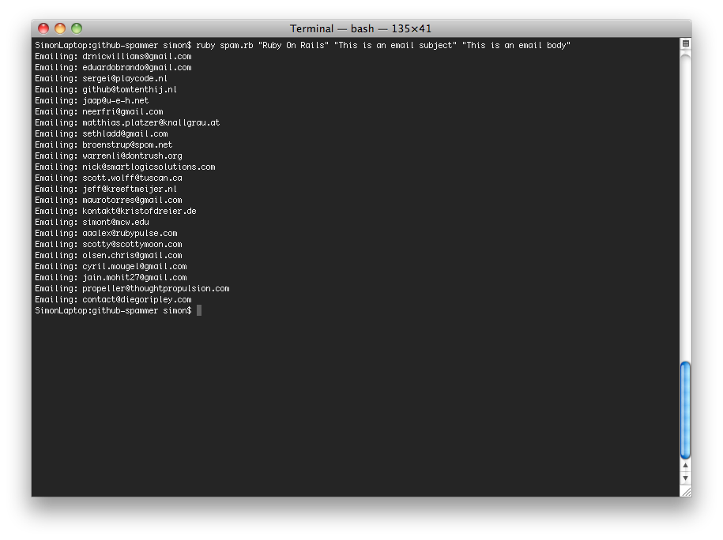

When looking at the GitHub API docs this evening, I noticed that they give out email addresses over unauthenticated API requests.
Realising this is pretty bad, I set about creating something to exploit it. What you see here is an hour's work, but it proves the concept nicely.
You'll need to enter your SMTP server settings in SMTP_OPTIONS, or configure Pony some other way.
